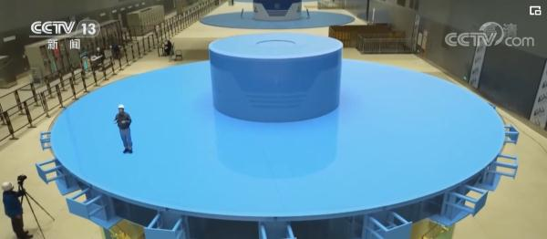
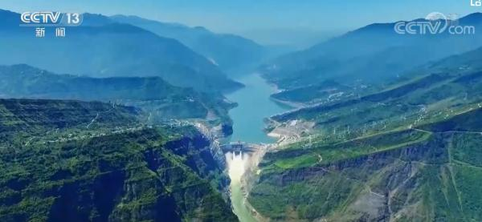

打破世界纪录！就在上海，中国智造了神奇发电厂
百分百中国“智”造！白鹤滩水电站九号机组安装完成
央视网消息：今天（12月20日），世界在建规模最大、综合技术难度最高的大型水电工程——白鹤滩水电站最后1台百万千瓦机组投产发电，意味着白鹤滩水电站16台机组已全部投产发电，标志着世界最大清洁能源走廊全面建成。

白鹤滩水电站左右两岸共布置16台单机容量100万千瓦水轮发电机组，是目前世界上单机容量最大的水轮发电机组。机组水力设计、电磁设计、通风冷却、高性能材料研发应用达到世界领先水平。
白鹤滩水电站位于四川省宁南县和云南省巧家县交界处金沙江干流河段，是实施“西电东送”的国家重大工程，电站总装机容量1600万千瓦，仅次于三峡工程，位居世界第二。白鹤滩水电站与已建成的乌东德、溪洛渡、向家坝、三峡、葛洲坝共6座世界级巨型梯级电站构建了世界最大清洁能源走廊，总装机容量相当于3个三峡电站装机容量。
截至目前，世界最大清洁能源走廊累计发电量已突破3.18万亿千瓦时，相当于节约标准煤9亿余吨，减排二氧化碳25亿余吨。
百万千瓦水轮机组 中国“智”造
白鹤滩水电站16台单机容量100万千瓦水轮发电机组是目前世界上单机容量最大的水轮发电机组，全部为中国自主研发制造。研制难度远远大于世界上其他在建和投运的水电机组，被誉为世界水电行业的“珠穆朗玛峰”。

水轮发电机是水电站的核心设备之一。高处具有势能的水流向低处，把水的势能转化成动能推动水轮机转动，水轮机带动发电机发出电能。水轮发电机的功率越高，单位时间内可发出的电量就越多。
在1994年修建三峡工程之前，中国还不具备制造32万千瓦以上水电机组的能力。从三峡工程建设开始，我国加快了水电重大装备的研发、设计和制造能力的提升，用7年时间，自主研发制造的水轮发电机组成功实现从32万千瓦到70万千瓦水电机组的跨越。经过金沙江溪洛渡、向家坝、乌东德水电站建设，国产水电机组单机容量成功提升到85万千瓦，我国水电装备制造业也成功跻身世界先进行列。